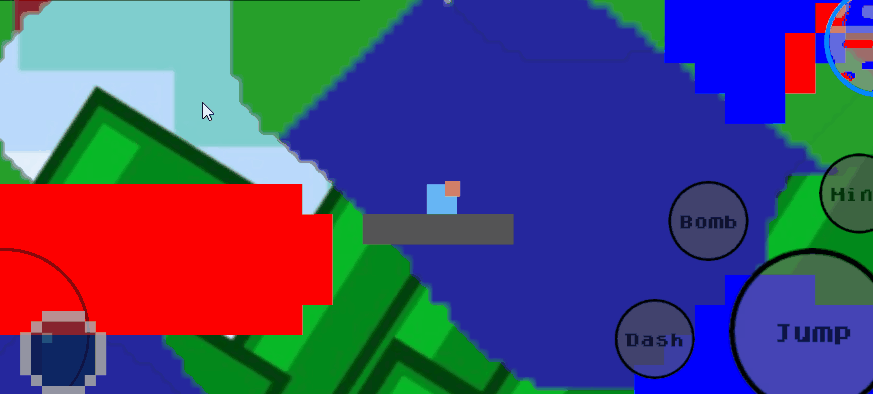
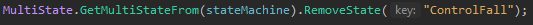

Dashing Exploration
Présentation du projet
Dashing Exploration est un jeu en 2D sideview composé d'un hub et de dix niveaux avec chacun un objectif dans un monde infiniment grand former de carrés,
le joueur doit explorer ce monde en combinant ses capacités de déplacements et en interagissant avec son environnement pour compléter les objectifs.
Images/Gifs du projet finale :


Projet
1) GameDesign :
Concepte de base :
Le jeu se joue en format paysage, le personnage ce contrôle avec un joystick sur la gauche et des boutons correspondant à des capacités sur la droite.
Le joueur possède des capacités pour changer son environnement (Miner, Bomb) et des capacités de déplacements (double Jump, wall Jump, Dash).
Il est impossible de mourir mais on peut par exemple faire une grande chute qui peut faire perdre beaucoup de progression.
J'ai limité les possibilités de mouvements afin de demander plus de réflexion (qu'elle est la bonne combinaison de mouvement pour atteindre une certaine zone?) et/ou
d'exploration (trouver un passage plus simple) au joueur mais le level design repose sur de la génération procédurale,
la difficulté était donc compliquée à régler c'est pourquoi j'ai ajouter le system de bonus.

Système de Bonus et Shrine :
Les bonus s'obtiennent en détruisant des blocs dans des biomes spécifiques, ils sont actuellement le seul vrai intérêt autre que visuel du system de biome.
Il y a trois biomes (rouge, vert, bleu) pour trois bonus, ils rendent la progression du joueur dans le niveau plus simple et ils sont remis à 0 au début de chaque niveaux.
Ce system permet de s'assurer qu'un joueur ne restera pas bloqué dans un niveau.
Les bonus permettent aussi de rendre le gameplay moins lisse et de créer sentiment de progression dans chaque niveau.
Les seuls désavantage des bonus sont le fait qu'il faut détruire des blocs pour les obtenir (et donc rendre le terrain plus compliqué) et le temps pour casser des blocs.

Le system de shrine est très similaire au system de bonus et avec presque les mêmes objectifs de gameDesign mais en plus puissant et avec une durée.
Ils apparaissent de manière aléatoire.

Courbe de difficulté :
Le jeu possède un tutoriel, dix niveaux qui augmente en difficulté et un mode infinis ou la difficulté augmente à l'infini.
La difficulté augmente de plusieurs manières dans les niveaux :
-les objectifs deviennent plus durs à remplir
-Les blocs deviennent plus résistants
-La taille des niveaux augmente
L'augmentation de la difficulté rend les niveaux plus longs à compléter et peut demander des mouvements plus durs à exécuter.

Hub :
Permet d'avoir un level design fix (apprendre des mouvements), un point de repère dans des mondes infinis,
de ralentir le rythme entre les niveaux et de faire en sorte que la sélection des niveaux se fasse avec le gameplay.

2) Technique :
Générale :
Mon premier projet sur portable j'ai rencontré plusieurs problèmes d'optimisation qui ont tous été règlés
sauf les vidéos dans le tutoriel qui augmente trop le poids du projet principalement.
J'ai utiliser UnityRemote pour tester le projet.
Le projet comportait d'autres défis techniques, en voici certains :
Noise :
Le plus grand défi technique du projet, j'utilise du noise pour la génération du terrain et du background.
L'utilisation de génération procédurale était importante pour le projet pour rendre le gameplay moins lisse et la rejouabilité et l'utilisation de techArt était ma meilleure solution pour les visuels du jeu.
Ici c'est une version dézoomer du jeu et je déplace le joueur dans Unity, on peut voir le terrain se générer/supprimer.
Le terrain et le background sont générés uniquement autour du joueur pour l'optimisation et avec un system qui recréer les modifications sur le terrain faites par le joueur.
Le background est créé avec deux plans avec un effet de parallax c'est pourquoi il faut générer plus de background.
Ads et Boutique :
J'ai configurer et utiliser Unity ads pour des bannière et "Interstitial ads", je n'ais garder que les bannière dans le projet.
Le projet possède aussi une boutique qui permet d'acheter et de sélectionner une apparence pour le personnage qui fonctionne avec Unity IAP.
GooglePlay :
J'ai pu créer un compte googlePlay développeur
et apprendre à utiliser la googlePlayConsole qui m’a permis de bien configurer le projet pour le publier notamment par rapport à la monétisation.
Le jeu a été publier de manière publique sur le PlayStore après plusieurs versions(release) de test.
Voici la page googlePlay du jeu :

Aspet technique spécifique : MultiState
Le multistate est une évolution d'un State pour en avoir plusieurs en un ce qui permet d'avoir plus de contrôles sur une stateMachine.
J'aurais aussi pu utiliser plusieurs stateMachines.
J'utilise un dictionnaire de state avec un variable string en clef pour pouvoir retrouver un state spécifique.
Exemple d'utilisation : Mouvement du personnage et Dash
Chaque capacité de mouvement du personnage est séparée des autres graces à ce système ce qui permet d'avoir plus de contrôles :

J'ai utilisé ce system pour faire la capacité de dash du personnage qui désactive d'abord la capacité de "ControlFall" du personnage durant la phase de zoom :

le personnage peut encore se tourner, puis tous les mouvements sont désactiver durant le dash et sont ensuite rétablis à la fin :


3) Aller plus loin :
-Gameplay et Courbe de difficulté :
Je pense qu'il y a actuellement deux problèmes principaux le plus important est le manque de capacités de mobilités du personnage,
même si le "wall Jump", le "double Jump" et le dash offrent déjà une certaine complexité le gameplay est trop limité.
L'autre est l'augmentation de la difficulté/courbe de difficulté qui est trop basé sur l'augmentation du temps pour chaque niveau
et pas assez sur celle de la complexité d'exécution des mouvements.
Ces deux problèmes pourraient être réglés avec l'ajout de nouvelles capacités de mouvements déblocables après certains niveaux,
par exemple pouvoir utiliser des bombes pour se projeter.
Ajouter une progression permanente entre chaque niveaux (exemple : augmentation des dégâts de la bombe) qui pourraient rattraper l'augmentation de la difficulté des niveaux pourrait aussi apporter une fausse progression.
-Boutique :
La boutique actuelle est plus une version de test, un vrai boutique aiderait à monétiser le jeu.
4) Post mortem :
Le tutoriel est ce qui fonctionnait le moins dans le projet.
lorsque je l'ait fait tester à des gens extérieurs au projet, le tutoriel n'était pas assez claire sur ce que j'essayais d'apprendre aux joueurs malgré les vidéos.
Si je devais refaire le system de pub je n'utiliserais pas Unity Ads mais plutôt google ad manager.
Même si le projet fonctionne bien sur portable je pense qu'un gameplay plus passif aurait plus de potentiel.